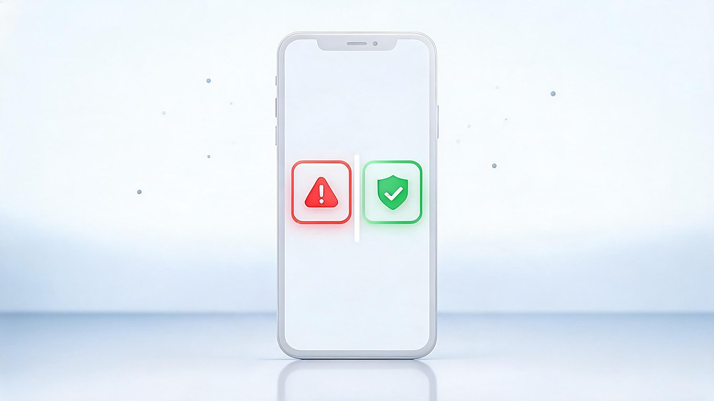
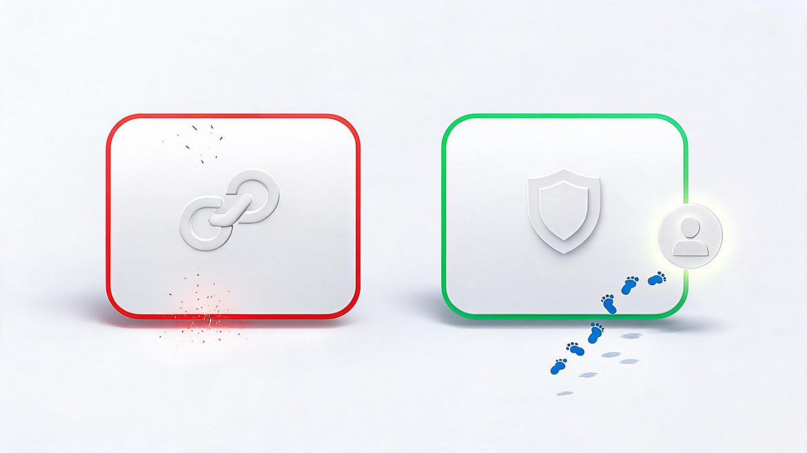

Google Gmail data breach warning: how to check whether it is real — that is the question behind the alert in your inbox, the answer you need is simple: real Google alerts never ask for your password through an email link — they point you to myaccount.google.com. Both real and fake versions of this warning are circulating, born from a genuine 2025 security event that phishers immediately copied. The honest framing: the warning wave is not a simple true-or-fake story — it is a real security event, an exaggerated headline, and a phishing copycat all wearing the same name. Here is the verification checklist and the 10-minute response plan.
Both real and fake "Gmail data breach warnings" exist. A real Google alert never asks for your password by email link — it tells you to review activity at myaccount.google.com. The 2025 warning wave traces to a real incident: hackers breached Google's own Salesforce CRM, and Google advised users to harden accounts with passkeys and 2FA. Viral "2.5 billion must change passwords" headlines were false, per Google.
Both. That is the uncomfortable answer, and it is likely why this search spiked. A real warning wave exists — in mid-2025 Google advised users to strengthen account security after hackers breached one of its own Salesforce CRM instances — and fake versions of that warning circulate as phishing, exploiting the same headlines to trick people into handing over credentials.
The 30-second check that resolves almost every case: real Google alerts never ask you to enter your password through an email link. They point you to your Google Account page. Every marker you need is in the checklist below — but if your "warning" asks for a password, a one-time code, or payment, close it. That one is fake no matter how official it looks.
The verified timeline, with each stage sourced — dates may matter as you weigh recency:
That sequence created the exact confusion this article addresses: a genuine security event, a genuine advisory, an exaggerated headline wave — and phishers copying all three.

| Marker | Real Google alert | Phishing version |
|---|---|---|
| Delivery | Inside your Google account notifications, or from no-reply@accounts.google.com | Random sender domains, lookalike addresses, WhatsApp forwards |
| Action path | "Review activity at myaccount.google.com" | "Click here to secure your account" → login page lookalike |
| Asks for | Nothing in the email — you sign in yourself | Password, one-time code, recovery phrase, or payment |
| Tone | Factual, specific (device, location, time) | Urgent, threatening, "act within 24 hours" |
| Navigation | You navigate to Google yourself | You navigate through their link |
The single strongest marker is the action path: Google's own security documentation consistently directs users to review alerts at myaccount.google.com rather than authenticate through emailed links. A warning that needs you to log in *through its own link* is declaring itself fake.
Whether your warning was real or fake, the same five minutes of hardening covers both cases — this is Google's own recommended flow via Security Checkup:
If you want the deeper scam-spotting layer, our guide to detecting AI-generated scams covers the newer AI-crafted versions of these emails, and the AI phishing protection guide covers defenses.
Clicked before you read the markers? Act in this order — speed likely matters more than perfection:
Then treat the next warning more suspiciously: attackers who harvested your email could follow up with convincing follow-up scams, including voice calls — the same vishing technique the original Salesforce attackers used.
Real Google warnings arrive through defined channels, and knowing them makes fakes obvious. In-product: a colored banner across Gmail or your account page. By email: from Google's official sender, describing the event (a new sign-in, a blocked attempt) and linking to your account — where you re-authenticate yourself. Proactively: Security Checkup prompts and, for serious events, critical alerts across your signed-in devices.
What Google does not do: call you about "unusual activity," email you a password-reset form to fill, or ask for a one-time code over the phone. Every one of those patterns has appeared in fake Gmail warnings — the phone-call variant is the vishing technique the actual 2025 attackers used against corporate targets.
The viral framing deserves its own section because it is the reason this search exists. After Google's August 2025 security advisory, multiple outlets reported that Google was urging all 2.5 billion Gmail users to change their passwords immediately. Google responded that this characterization was false — the advice targeted users exposed through the Salesforce-related theft of business contacts, and the recommended actions were security hardening (passkeys, 2FA), not a mass password-reset emergency.
The lesson generalizes: security headlines compress nuance, and compressed nuance is what phishers farm. The article you are reading follows the same verification discipline we applied to the broader data breach coverage — and the same one Google's own response modeled: precise claims, named sources, dated statements.
A skeptical reader might ask: if there is any risk, why not just change every password immediately? Because rushed changes create their own security failures — password reuse between old and new credentials, missed 2FA updates, recovery codes discarded, and panic-driven sign-ups for "protection services" that are themselves scams. Security researchers consistently note that phishing works by manufacturing urgency; responding to a fake alert by panic-acting completes the attacker's loop.
Rule of thumb: urgency is the attacker’s tool. Any “warning” that demands action within 24 hours — by email, call, or popup — has already failed the first Google check.
The measured response — verify the warning's markers, run Security Checkup once, harden sign-in once — covers the real risk without manufacturing new mistakes. Calm is not complacency here; it is the procedure.
Claims were verified in October 2026 against: Google's own support documentation for security alerts and Security Checkup; Google Cloud's threat-intelligence blog for the ShinyHunters/UNC6040 vishing technique; contemporaneous reporting (Mashable, The Hill, Proton, Newsweek) for the advisory and the false "2.5 billion" framing, including Google's own response; and Salesforce-incident analyses for the June 2025 CRM breach. Claims that trace only to social posts were excluded. Dates are stated so you can weigh recency yourself.
Both exist. A real advisory wave occurred in 2025 after hackers breached Google's Salesforce CRM — Google advised passkeys and 2FA. Fake versions of that warning circulate as phishing. The check: real Google alerts direct you to myaccount.google.com and never ask for your password through an email link.
No. Google publicly called that framing false. The real advice was to harden accounts with passkeys and 2FA, aimed at users potentially exposed through the stolen business contacts, not a mass password-reset emergency for all users.
Go to myaccount.google.com, open Security Checkup, and review recent security events and signed-in devices. Anything unfamiliar gets signed out. Google also shows blocked sign-in attempts there, so you see what attackers tried.
Change your Google password immediately from another device, sign out of all sessions, delete unfamiliar filters and forwarding rules, verify recovery options, and report the message as phishing in Gmail.
Never. Real Google security emails link to your account where you sign in yourself. Any email or call requesting your password, a one-time code, or a recovery phrase is phishing, regardless of how official it looks.
It is Google's guided review at myaccount.google.com/security-checkup: your signed-in devices, recent events, third-party app access, 2FA status, and recovery info — the same flow Google recommends after any breach warning.
Treat every Gmail breach warning the same way: check the markers, navigate to your account yourself, run Security Checkup once, and harden sign-in with 2FA or a passkey. That routine should make the real warnings useful and the fake ones harmless — and it takes less time than reading the headline that scared you.
This guide was verified in October 2026 against Google's support documentation and contemporaneous reporting. It is general security information, not personalized advice; follow your own judgment and Google's official channels for account-specific issues.